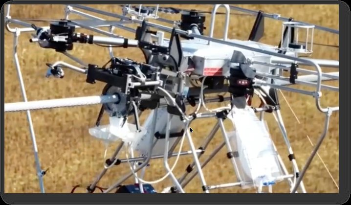

DCAM — Dynamic Coating Application Module

Senior Mechatronics Engineer leading DCAM — an electro-mechanical module that automates the deployment of a coating application module onto power-grid conductors, replacing the manual connect/disconnect work previously done by linemen at height. V1 deployed from a robotic base platform at the test facility; V2 optimised for UAV deployment and pilot-run on a decommissioned Hydro-Québec line via LineDrone — no operators at height.
Designed the mechanism in Fusion 360: an over-centre linkage that locks the module's arms closed without actuator assistance, retaining full clamping force as the module is pulled along the conductor. Actuation by Actuonix L12 linear actuators with integrated drivers, driven open-loop by external PWM from the platform or UAV — no onboard electronics. Took the module from concept to manufacture.